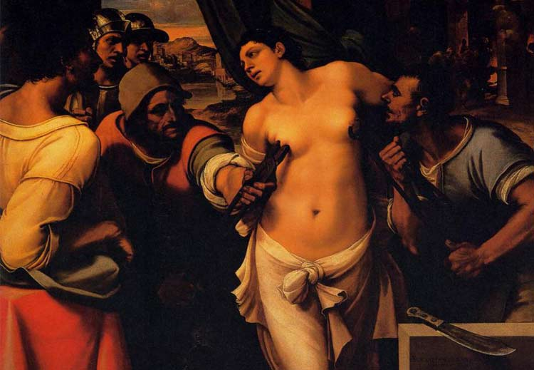

重男轻女作为一项传统流传了几千年的传统，遭受到了有史以来最严峻的挑战！为什么这样说呢？下面进入“有数据有真相时间”。据不完全统计，节日说自2015年9月“出道”至今，已发布了德国太太节、日本爱妻日、萝莉节、更年期关怀日、主妇休息日等等给女性发福利的节日，但除清华大学男生节（此处可理解为高等学府的特殊待遇）外，几乎没什么男人的节日。而且更厉害的就是今天这个节日——女市长节，家庭主妇都可以当市长了！
这个节日的背后充满了惨痛，后来意大利著名画家皮翁博创作了《圣阿加莎殉难》来纪念这件事。眼看过年了，放下你手里的那盘饺子听我慢慢说……
圣阿加莎是3世纪西西里岛人，据说是个被罗马官员看上的漂亮姑娘。（斗鸡眼、猪腰子脸、罗圈腿的……这些内容为合理想象）罗马官员向她求婚却遭到了她的拒绝。这事要是放在今天根本就不叫事，喝杯酒笑一笑也就过去了。但那时的罗马男人普遍心理承受能力较差而且心眼小的吓人，凶残的罗马人经过讨论决定……把她的milk给割了。这画面太美，不适合未成年人想象……
西班牙北部村庄的妇女为了纪念她，将每年的2月5日作为了她们自己的节日，并且会加倍提防这一天鬼鬼祟祟、企图不轨的男子。
在萨马拉马拉，两个主妇会当选为期一天的联合女市长。她们身着缀满了银制饰品，穿着红黑相间的华丽长袍像帝王一样绕城一周，她们还要主持市政公务、发号施令。与此同时，所有的男人们必须呆在家里处理所有的家务杂事，而她们的妻子则在街道上和女市长狂欢。
而在埃斯克曲，这一天妇女们会穿上乡下的劳动衣服，在头上顶着面包参加“神圣面包”游行，这些仪式充满了讥笑与讽刺。在萨马拉马拉的节日庆典结束的时候，按照习俗要焚烧一个破旧的洋娃娃，在焚烧的同时还要大声地讲一些嘲弄幽默的假话。
1、每年的2月5日是西班牙的女市长节，两名主妇会当选为联合女市长，尽享“荣华富贵”；
2、圣阿加莎因善良被后世尊为乳房疾病守护神，向她祷告可免除乳腺癌等疾病！